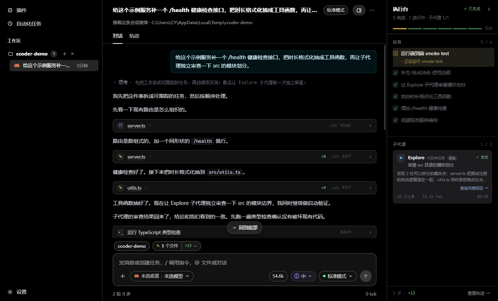
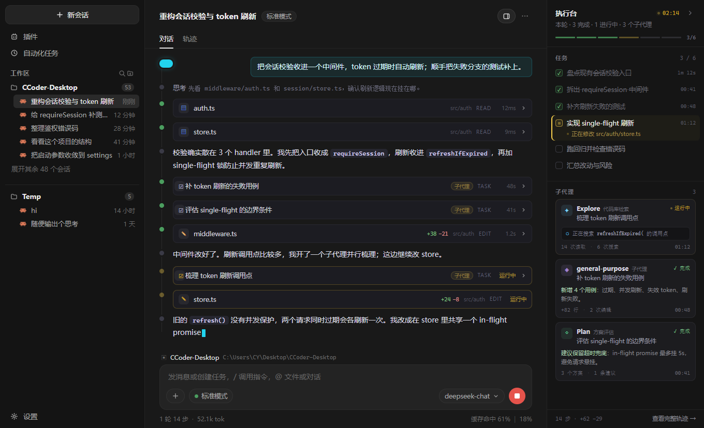
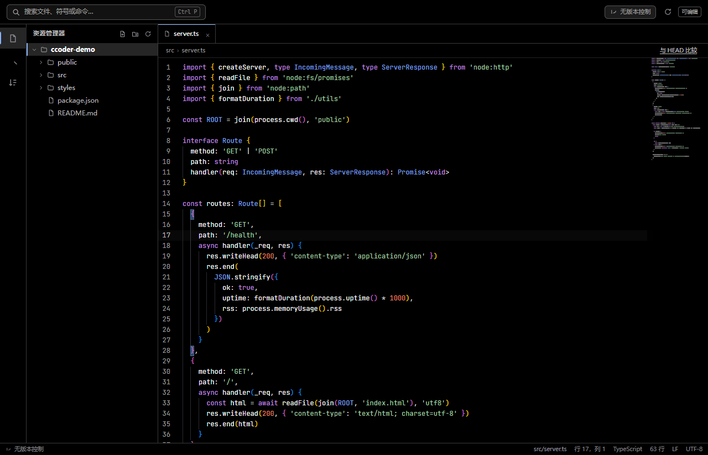
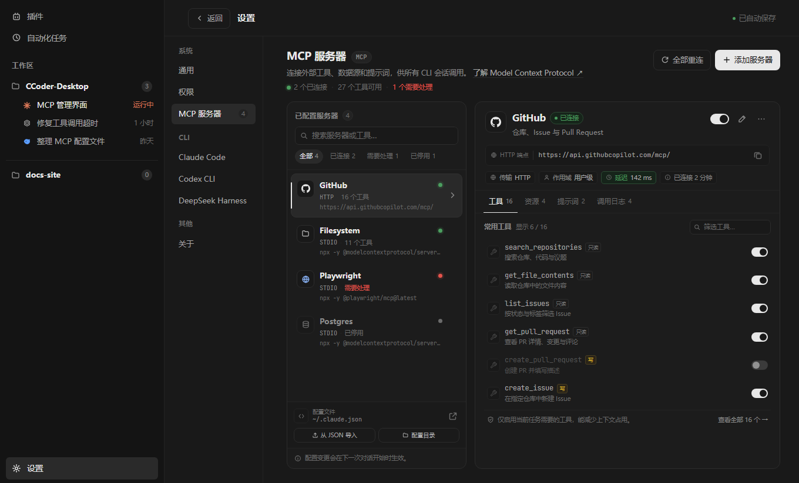
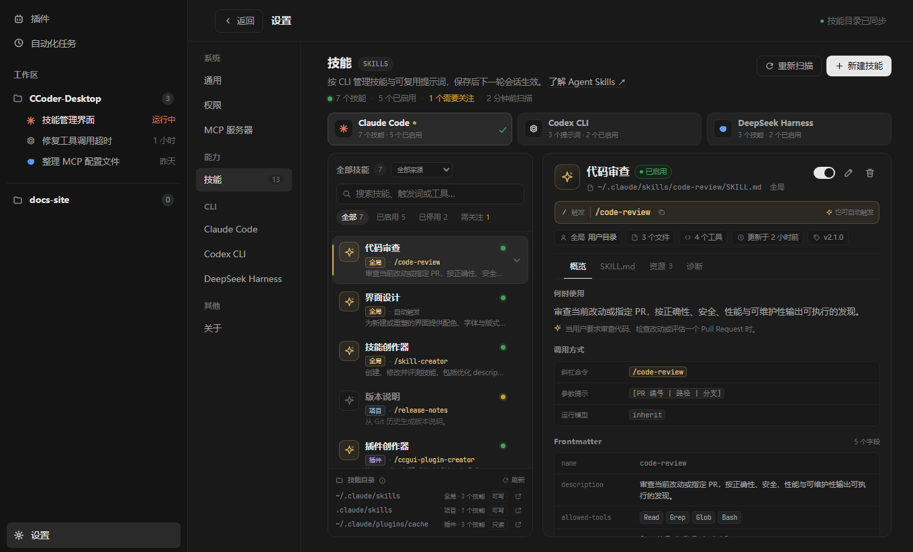
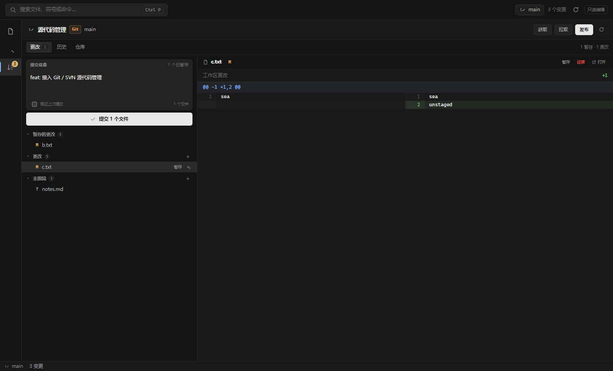
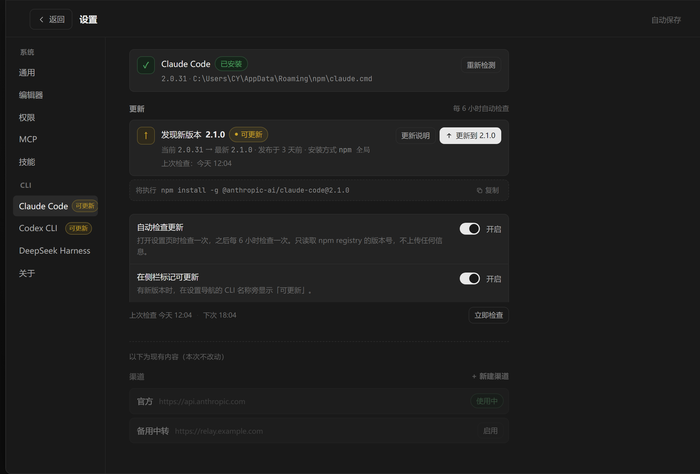

C
独立通道
Claude Code
CH / 01Anthropic 协议。直接用 CLI 自己的 OAuth 登录，或接任意兼容端点；思考深度还能按会话单独覆盖。
- 协议
- Anthropic
- 会话
- ~/.claude/projects
- 凭据
- OAuth / API 渠道
Desktop cockpit for coding agents / Windows · x64
把 Claude Code、Codex CLI 与 DeepSeek Harness 装进同一个桌面窗口。 多会话并行、子代理进度、独立 IDE、Git / SVN 与九套配色，全部收进一块控制台。
v1.2.7 · 安装版 / 便携版 · 约 85 MB · 首次启动自动检测已安装的 CLI

// 引擎
三家 CLI 的协议、渠道、模型与凭据完全隔离。可以在一个窗口里同时跑，也可以让它们各自守着一块工作区。
Anthropic 协议。直接用 CLI 自己的 OAuth 登录，或接任意兼容端点；思考深度还能按会话单独覆盖。
OpenAI 协议。渠道、主模型与 small / fast 模型分别配置，和另外两条链路互不串台。
Web 协议直连 dsh，模型目录由 Harness 自己返回。审批和提问都能在界面里答，不靠终端模拟。
// 执行台
任务清单、子代理、工具次数、token、耗时和完整报告收在右侧。对话区只留真正的对话、思考块和工具卡片。

// 工作台
独立 IDE、版本控制、MCP、技能、改动审阅和自动更新——不用切出去找工具。
一个工作区一个窗口。Monaco、LSP、多标签、内置终端与崩溃恢复都在里面。

GitHub、Playwright、Postgres 按服务器开关，只把当前任务需要的工具带进上下文。

斜杠一敲就调用。Claude、Codex 与 DSH 的技能各自管理，也能从目录里直接装。

按工作区自动识别仓库类型。stage、diff、提交、冲突解决、fetch / pull / push 和 worktree 都在这里。

输入框左上角列出这一轮动过的文件。点一行，直接在 IDE 打开相对 HEAD 的 diff。
快速打开、命令面板、会话内查找，全部走同一套快捷键。
CLI 有新版本先在设置和侧栏提示，点一下才更新。应用本身也不静默替换。

v2.1.0 可更新// 配色
深色、午夜蓝、森林绿、雾紫、咖啡棕、苔原、高对比、浅色、暖纸。主窗口、IDE 和弹窗共享一套主题，切换即时生效，不用重启。
点一套配色，右边的窗口会立刻切换。
/health 补上，再顺手跑一遍类型检查。/health 就行。src/utils.ts。// 下载
Windows 10 / 11 · x64 · 约 85 MB。安装前请先装好并登录对应的 CLI，首次启动会自动检测。
应用内更新 · 下载与重启都由你确认